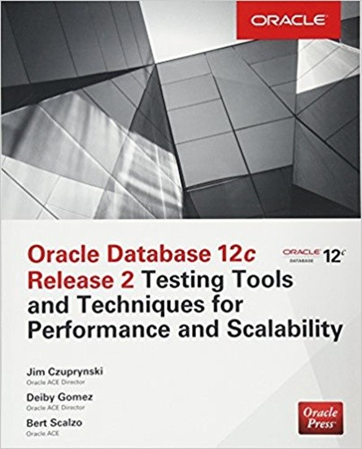

Artículo 9 Un vistazo panorámico de una especialización con tecnología Oracle
Deiby Gómez
Egresado Facultad de Ingeniería - USAC
deiby.m.gomez@gmail.com
Mi primer acercamiento con Oracle fue en el año 201 0, tuve la oportunidad de estudiar por primera vez libros oficiales de Oracle University (La academia oficial para capacitaciones de Oracle) a través de una beca que finalmente se convirtió en mi primer trabajo como profesional.
Tengo muy claro el siguiente recuerdo, después de dos meses de haber empezado a laborar profesionalmente tuve la sensación de no saber casi nada de los temas que manejaban en mi entorno, era una sensación muy rara porque como estudiante traté la manera de entender muy bien los temas de los cursos del área profesional y aun así el conocimiento que tenía de los problemas del “mundo real” era muy limitado. Luego de ocho años, entiendo qué fue lo que sucedió en aquel momento, la universidad básicamente te prepara en muchas áreas, pero, no te vuelve experto en ninguna.
En la Universidad de San Carlos de Guatemala, de la cual soy egresado, tienes dos años de área común, en ese tiempo estudias Ciencias y tres años más estudias cursos propios de la carrera de Ingeniería en Ciencias y Sistemas. Tres años no son suficientes para volverte experto en todo, es cuando se comprende que la universidad puede únicamente introducirte en cada una de las áreas de especialización de la carrera, mientras que para atender problemas en el mundo real se necesita conocer conceptos avanzados de varias áreas, infraestructura, hardware, redes, bases de datos, etc., incluso hasta el rendimiento de aplicaciones.
No hay nada que temer, parte del conocimiento lo obtienes con experiencia y eso se hace a través de los años, es un proceso por el que todos pasamos. Así que no te apresures, mejor disfruta el proceso de volverte experto. Lo que si es cierto es que en la actualidad la especialización en una tecnología específica es altamente demandada. El tiempo en que un profesional tenía que saber de todo pero ser experto en nada ya pasó, aunque, muchas empresas aún sigan poniendo resistencia a esto, en especial el mercado local.
Esto es muy peligroso para el futuro de los estudiantes y profesionales pues he visto a algunos estudiantes que inician su carrera profesional y para conservar su trabajo son permisivos al realizar requerimientos de todas las áreas de sistemas pero no se especializa en ninguna.
A corto plazo está bien para obtener experiencia e iniciar una carrera profesional, pero, a largo plazo esto es perjudicial pues las mejores oportunidades de la globalización están en perfiles especializados. Así que en algún punto debe hacerse una transición a la especialización, mi recomendación siempre será empezar a especializarse desde el inicio.
Siempre hay que tomar en cuenta que la especialización que se elija debería tener mucho futuro y que tenga muy poca probabilidad de quedar obsoleta en corto tiempo, por supuesto, toda tecnología eventualmente se vuelve obsoleta, pero, su tiempo de vida debe ser suficiente como para obtener beneficios de nuestra especialización durante muchos años y que nos dé tiempo para hacer una transición hacía otra nueva tecnología cuando se deba cambiar.
Oracle Corporation fue fundada en 1977 y tiene varios años proveyendo software empresarial a varias organizaciones alrededor del mundo. Tiene cientos de productos en su cartera y ofrece diferentes certificaciones para cada producto específico. Las certificaciones son útiles en el camino hacia una especialización. Oracle tiene varios niveles de certificaciones, para bases de datos por ejemplo, serían los siguientes, desde el más básico hasta el más avanzado:
- Oracle Certified Associate (OCA)
- Oracle Certified Professional (OCP)
- Oracle Certified Master (OCM)
- Oracle Maximum Availability Architecture Certified Master (MAA OCM)
Hoy en día las certificaciones son una parte muy importante en nuestro desarrollo como profesionales. A mi criterio, las certificaciones son igual de importantes que un título universitario.
Vivimos en un mundo ya globalizado y es algo que debe ser aprovechado. Vemos a profesionales guatemaltecos trabajando desde su casa para empresas en Estados Unidos y/o Europa, empresas que brindan mejores beneficios a sus colaboradores y una mejor cultura laboral. Las empresas de origen guatemalteco actualmente están presionadas, pues para ser competitivas y retener al talento deben brindar igual o mejores beneficios que las empresas extranjeras que tienen oficinas en Guatemala.
Los profesionales también deben ser competitivos para gozar de los beneficios que el mundo globalizado ofrece, es allí cuando las certificaciones se convierten en un pilar muy importante al igual que el inglés. Muchos estudiantes dejan su preparación en el idioma inglés para los últimos semestres de la carrera dejándolos en desventaja ante el mundo globalizado.
Yo pasé por ese problema, cuando era estudiante consideré que el inglés no era tan importante y lo pospuse para los últimos semestres. El problema de esto es cuando las oportunidades se presentan, no son aprovechadas. Yo tuve que actuar de manera reactiva y muy agresiva ante mi preparación en inglés, presionado por buenas oportunidades laborales que pasaban frente a mis ojos y que no las tomaba.
A todo esto, las oportunidades en el mundo globalizado también requieren mucha experiencia.
Los problemas a los que se enfrentan los departamentos de IT de empresas en USA y Europa no son los mismos a los problemas en empresas locales, se requiere una experiencia mucho más amplia por parte de los consultores al intentar solucionar estos problemas.
Además, en el extranjero se manejan procedimientos de escalamiento y procedimientos de alertas muy bien definidos, casi todo cambio y/o mantenimiento es muy bien planificado y documentado en cuanto a tiempos y también a personas involucradas; y los tiempos de respuesta a problemas son muy agresivos.
El downtime (tiempo que el sistema no está disponible) en el extranjero sí es palabra mayor por lo que un consultor que tiene mucha experiencia y resuelve problemas rápidamente tiene mucha ventaja a la hora de encontrar buenas oportunidades laborales.
Las oportunidades que nos trae el mundo globalizado si bien son atractivas, también, requieren de amplia experiencia. Los estudiantes que inician su vida laboral deberían poner energías en: el dominio del idioma inglés, certificaciones y obtener experiencia.
Mientras un profesional está adquiriendo experiencia puede también apoyar a la comunidad de la tecnología con la que trabaja.
Al estar en un mundo globalizado, no es para nada raro tener amistades en India, en Estados Unidos, China o en cualquier otra parte del mundo. El conocimiento es global y los mismos problemas que podrías estar teniendo en tu trabajo también los podría estar teniendo otra persona al otro lado del mundo, entonces, ¿Por qué no apoyarse mutuamente? por eso creo que debemos compartir el conocimiento globalmente, esto lo puedes hacer a través de artículos en un blog, periódicos o revistas; conferencias locales o en otras partes del mundo, escrituras de libros o whitepapers. Esa creencia de “Mientras solo yo sepa, seré un consultor sobresaliente y dejaré mi competencia atrás” está equivocada, el enfoque correcto debería de ser “Yo lo sé y lo compartiré para apoyar a otros y para que nuevos y mejores retos aparezcan”.
Algo que ayuda mucho, no solo a la comunidad sino también al profesional es ser conferencista en eventos de tecnología. En el caso de Oracle, se hacen eventos alrededor del mundo, uno muy importante en Guatemala es el “Oracle Technology Network Tour (OTN Tour)” el cual se realiza año con año y permite a varios profesionales compartir su conocimiento con colegas.
El OTN Tour se realiza también en otros 1 0 países de Latinoamérica así que cualquier profesional que quiera dar conferencias lo puede hacer en cualquier país de estos.
También existe el OTN en otras regiones, como el EMEA Tour (Europe, Middle East And Africa Tour) y el APAC Tour (Asia Pacific Tour) en donde cualquier profesional de Oracle es bienvenido para ser conferencista. El Oracle Open World es el evento más grande realizado por Oracle Corporation y se realiza en San Francisco, Estados Unidos, es un buen evento para darse a conocer a muchas empresas cuando se está en búsqueda de oportunidades laborales o de clientes potenciales.
Finalmente los eventos a los que hay que prestar atención son el KSCOPE que se realiza en diferentes ciudades de Estados Unidos y el COLLABORATE que siempre se realiza en Las Vegas, Estados Unidos. Todos estos eventos atienden a miles de personas por lo que son buenos lugares para búsquedas como las que indiqué antes o simplemente para mejorar el curriculum.
Oracle tiene un programa llamado “Oracle ACE Program” y otro llamado “Oracle Developer Champion Program” en los que Oracle Corporation reconoce el esfuerzo que varios expertos hacen por apoyar a la comunidad y les entrega una distinción según el nivel de apoyo y compromiso que se tenga para la comunidad.
Estas distinciones traen beneficios como estar en la lista oficial de expertos en el sitio de Oracle, ser aceptados fácilmente en eventos importantes de Oracle como los anteriormente mencionados, tener acceso a noticias confidenciales de Oracle y hasta poder probar una versión de algún software de Oracle mucho tiempo antes de que salga oficialmente al mercado.
Entre otros beneficios de pertenecer a estos programas es conocer a muchas personas expertas alrededor del mundo que están abiertas a trabajar en proyectos como la escritura de libros, así fue como en lo personal llegué a ser revisor técnico de libro “Oracle Database 12c Release 2 Multitenant” y autor del libro “Oracle Database 12c Release 2 Testing Tools and Techniques for Performance and Scalability”, ambos disponibles en Amazon.com.

Para finalizar, quiero reforzar la idea que el profesional de la actualidad ya no es el típico profesional que solamente resuelve requerimientos para la empresa en la que labora. El profesional actual es más dinámico, escribe libros, whitepapers, da conferencias en eventos importantes de la tecnología que representa, está involucrado con grupos de usuarios, atiende meetups constantemente, está en contacto con Product Managers de la tecnología que representa para mantenerse actualizado, reporta bugs o propone nuevas características y/o funcionalidades para mejorar el software, tiene certificaciones que son reconocidas mundialmente, habla inglés como mínimo, está en contacto con gente de India, Estados Unidos, China y el resto de países del mundo.
El mundo es globalizado y las oportunidades están allí, al alcance de quien las quiera aprovechar.